26/11. A base de dados do rebalanceamento: 108 lutas, 27 por chefão (3 mãos × 3 robôs × 3 lutas), todas no jogo rodando. Spec specs/2026-11-26-medicao-das-lutas-design.md. Os números de cada luta estão em dados.json, ao lado desta folha.
| Chefão | Mão | Canhão: a luta | Experiente: a luta | vidas | mortes | Comum: vidas | mortes |
|---|---|---|---|---|---|---|---|
| Torre | sem cartas | 36 s | 37 s | 0,7 | 0,0 | 0,7 | 0,3 |
| Torre | mediana | 15 s | 15 s | 0,0 | 0,0 | 0,0 | 0,0 |
| Torre | forte | 5 s | 5 s | 0,0 | 0,0 | 0,0 | 0,0 |
| Capitânia | sem cartas | 40 s | 53 s | 15,7 | 5,0 | 16,7 | 5,3 |
| Capitânia | mediana | 15 s | 19 s | 1,7 | 0,3 | 1,7 | 0,0 |
| Capitânia | forte | 4 s | 5 s | 0,0 | 0,0 | 0,0 | 0,0 |
| Serpente | sem cartas | 93 s | 130 s | 6,0 | 2,0 | 7,7 | 2,0 |
| Serpente | mediana | 54 s | 59 s | 1,0 | 0,0 | 1,3 | 0,0 |
| Serpente | forte | 38 s | 40 s | 0,0 | 0,0 | 0,0 | 0,0 |
| Guardião e Besta | sem cartas | 271 s | 303 s | 24,3 | 7,7 | 31,7 | 10,0 |
| Guardião e Besta | mediana | 148 s | 156 s | 2,3 | 0,7 | 4,3 | 1,0 |
| Guardião e Besta | forte | 71 s | 93 s | 1,3 | 0,0 | 2,3 | 0,3 |
"Vidas" = vidas perdidas por luta (média); "mortes" = vezes por luta em que as 3 vidas acabaram. O casco das cartas segura golpes sem tirar vida.
A Torre (F1, flap). Ninguém apanha, a não ser sem cartas (0,7 vida no experiente). Com a mão mediana ela cai em 15 s; com a forte, em 5 s. Como primeiro chefão, é uma luta de aprender, mas hoje ela não cobra nada de quem tem cartas.
| Mão | Canhão | Piloto experiente (550 ms) | Piloto comum (700 ms) | ||||||
|---|---|---|---|---|---|---|---|---|---|
| a luta | a luta | golpes | vidas | mortes | a luta | golpes | vidas | mortes | |
| sem cartas (3/3/3) | 36 s | 37 s | 0,7 | 0,7 | 0,0 | 39 s | 0,7 | 0,7 | 0,3 |
| mediana (3/3/3) | 15 s | 15 s | 0,0 | 0,0 | 0,0 | 16 s | 0,0 | 0,0 | 0,0 |
| forte (3/3/3) | 5 s | 5 s | 0,0 | 0,0 | 0,0 | 5 s | 0,0 | 0,0 | 0,0 |
Médias das lutas; entre parênteses, quantas lutas de cada robô. "Golpes" conta o que o casco das cartas segurou; "vidas", só o que tirou vida.
| Fase | Canhão | Experiente | vidas | Comum | vidas | Ameaças na tela (média) | Maior respiro | Onde o experiente apanha |
|---|---|---|---|---|---|---|---|---|
| torre1 | 17 s | 17 s | 0,0 | 17 s | 0,0 | 5,3 | 2,0 s | |
| torre2 | 19 s | 20 s | 0,7 | 21 s | 0,7 | 5,0 | 2,5 s | torre2 0,7 |
| Fase | Canhão | Experiente | vidas | Comum | vidas | Ameaças na tela (média) | Maior respiro | Onde o experiente apanha |
|---|---|---|---|---|---|---|---|---|
| torre1 | 7 s | 7 s | 0,0 | 7 s | 0,0 | 3,8 | 2,1 s | |
| torre2 | 8 s | 9 s | 0,0 | 9 s | 0,0 | 5,4 | 2,5 s |
| Fase | Canhão | Experiente | vidas | Comum | vidas | Ameaças na tela (média) | Maior respiro | Onde o experiente apanha |
|---|---|---|---|---|---|---|---|---|
| torre1 | 2 s | 2 s | 0,0 | 2 s | 0,0 | 0,0 | 1,9 s | |
| torre2 | 3 s | 3 s | 0,0 | 3 s | 0,0 | 1,1 | 2,5 s |
A Capitânia (F2). A régua dos robôs. O que machuca é só a fúria: os kamikazes e os estilhaços do flak, com o maior respiro em 1,3 s, o menor de todas as lutas. Sem cartas a fúria dura uns 30 s e é impossível (16 vidas, 5 mortes). Com a forte, a luta dura 4 s.
| Mão | Canhão | Piloto experiente (550 ms) | Piloto comum (700 ms) | ||||||
|---|---|---|---|---|---|---|---|---|---|
| a luta | a luta | golpes | vidas | mortes | a luta | golpes | vidas | mortes | |
| sem cartas (3/3/3) | 40 s | 53 s | 15,7 | 15,7 | 5,0 | 58 s | 16,7 | 16,7 | 5,3 |
| mediana (3/3/3) | 15 s | 19 s | 3,7 | 1,7 | 0,3 | 18 s | 3,7 | 1,7 | 0,0 |
| forte (3/3/3) | 4 s | 5 s | 0,0 | 0,0 | 0,0 | 5 s | 0,0 | 0,0 | 0,0 |
Médias das lutas; entre parênteses, quantas lutas de cada robô. "Golpes" conta o que o casco das cartas segurou; "vidas", só o que tirou vida.
| Fase | Canhão | Experiente | vidas | Comum | vidas | Ameaças na tela (média) | Maior respiro | Onde o experiente apanha |
|---|---|---|---|---|---|---|---|---|
| capitania1 | 20 s | 22 s | 6,7 | 22 s | 7,0 | 5,9 | 2,6 s | base 6,7 |
| capitania2 | 21 s | 31 s | 9,0 | 36 s | 9,7 | 13,0 | 1,4 s | furia 9,0 |
| Fase | Canhão | Experiente | vidas | Comum | vidas | Ameaças na tela (média) | Maior respiro | Onde o experiente apanha |
|---|---|---|---|---|---|---|---|---|
| capitania1 | 7 s | 7 s | 0,0 | 7 s | 0,0 | 4,7 | 2,6 s | base 1,0 |
| capitania2 | 7 s | 12 s | 1,7 | 10 s | 1,7 | 11,8 | 1,2 s | furia 2,7 |
| Fase | Canhão | Experiente | vidas | Comum | vidas | Ameaças na tela (média) | Maior respiro | Onde o experiente apanha |
|---|---|---|---|---|---|---|---|---|
| capitania1 | 2 s | 3 s | 0,0 | 3 s | 0,0 | 3,9 | 0,9 s | |
| capitania2 | 2 s | 2 s | 0,0 | 2 s | 0,0 | 9,3 | 0,5 s |
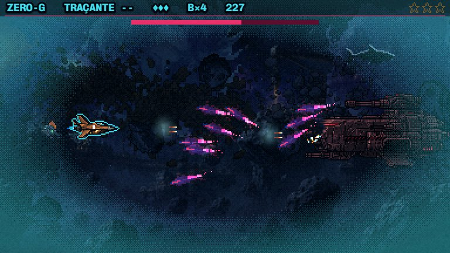
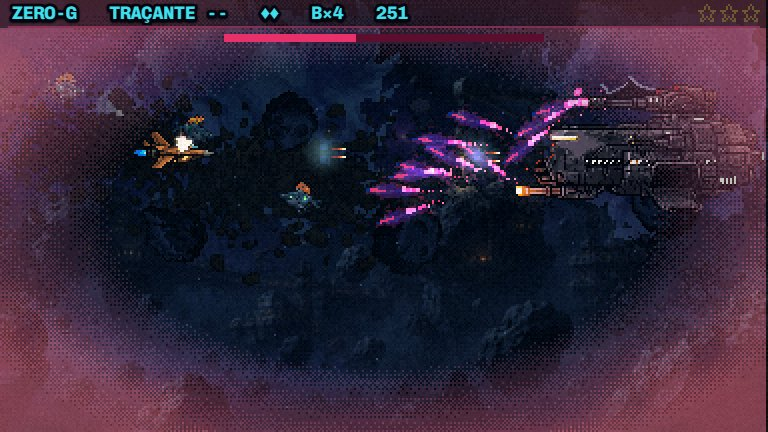
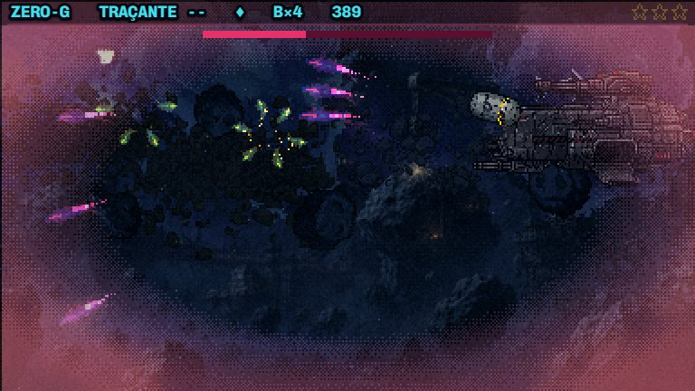
A Serpente (F3). As três cabeças quase não machucam: com a mão mediana o experiente apanha só da cabeça B, umas 0,7 vez. O que cobra é a enguia: quase todos os golpes vêm do corpo dela. Ela dura uns 29 s com qualquer mão, então a Serpente tem um piso de tempo. Sem cartas são 130 s e 6 vidas, quase todas na enguia. Lembrete: o piloto não prevê o corpo da enguia, só vê onde ele está, então os golpes dela podem estar contados a mais.
| Mão | Canhão | Piloto experiente (550 ms) | Piloto comum (700 ms) | ||||||
|---|---|---|---|---|---|---|---|---|---|
| a luta | a luta | golpes | vidas | mortes | a luta | golpes | vidas | mortes | |
| sem cartas (3/3/3) | 93 s | 130 s | 6,0 | 6,0 | 2,0 | 135 s | 7,7 | 7,7 | 2,0 |
| mediana (3/3/3) | 54 s | 59 s | 2,7 | 1,0 | 0,0 | 60 s | 3,0 | 1,3 | 0,0 |
| forte (3/3/3) | 38 s | 40 s | 1,0 | 0,0 | 0,0 | 40 s | 1,0 | 0,0 | 0,0 |
Médias das lutas; entre parênteses, quantas lutas de cada robô. "Golpes" conta o que o casco das cartas segurou; "vidas", só o que tirou vida.
| Fase | Canhão | Experiente | vidas | Comum | vidas | Ameaças na tela (média) | Maior respiro | Onde o experiente apanha |
|---|---|---|---|---|---|---|---|---|
| serpenteA | 16 s | 21 s | 0,0 | 21 s | 1,0 | 3,0 | 8,9 s | |
| serpenteB | 20 s | 20 s | 1,0 | 21 s | 1,7 | 2,4 | 12,0 s | gas 1,0 |
| serpenteC | 20 s | 24 s | 0,0 | 28 s | 0,0 | 3,1 | 3,3 s | |
| enguia | 36 s | 65 s | 5,0 | 64 s | 5,0 | 0,0 | 50,5 s | enguia 5,0 |
| Fase | Canhão | Experiente | vidas | Comum | vidas | Ameaças na tela (média) | Maior respiro | Onde o experiente apanha |
|---|---|---|---|---|---|---|---|---|
| serpenteA | 7 s | 7 s | 0,0 | 7 s | 0,0 | 5,0 | 2,4 s | |
| serpenteB | 9 s | 9 s | 0,0 | 9 s | 0,3 | 4,1 | 2,8 s | chuva 0,7 |
| serpenteC | 10 s | 11 s | 0,0 | 11 s | 0,0 | 2,5 | 3,2 s | |
| enguia | 29 s | 33 s | 1,0 | 33 s | 1,0 | 0,0 | 30,9 s | enguia 2,0 |
| Fase | Canhão | Experiente | vidas | Comum | vidas | Ameaças na tela (média) | Maior respiro | Onde o experiente apanha |
|---|---|---|---|---|---|---|---|---|
| serpenteA | 2 s | 2 s | 0,0 | 2 s | 0,0 | 0,6 | 1,3 s | |
| serpenteB | 3 s | 3 s | 0,0 | 3 s | 0,0 | 2,2 | 1,3 s | |
| serpenteC | 5 s | 5 s | 0,0 | 5 s | 0,0 | 0,7 | 3,2 s | |
| enguia | 29 s | 29 s | 0,0 | 29 s | 0,0 | 0,0 | 29,2 s | enguia 1,0 |
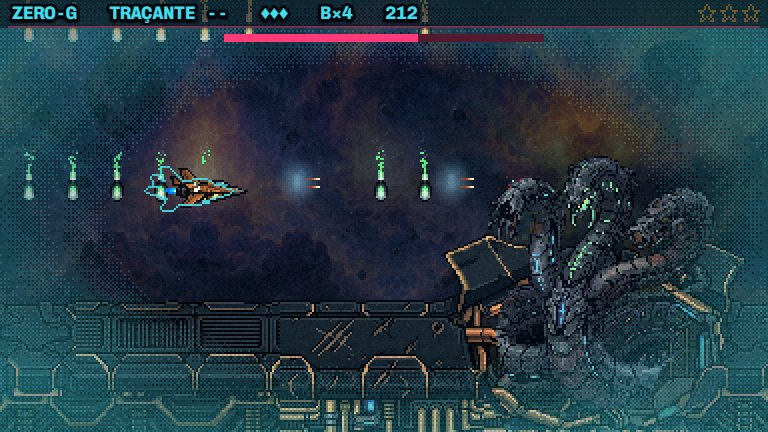
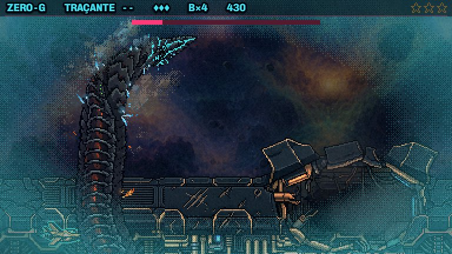
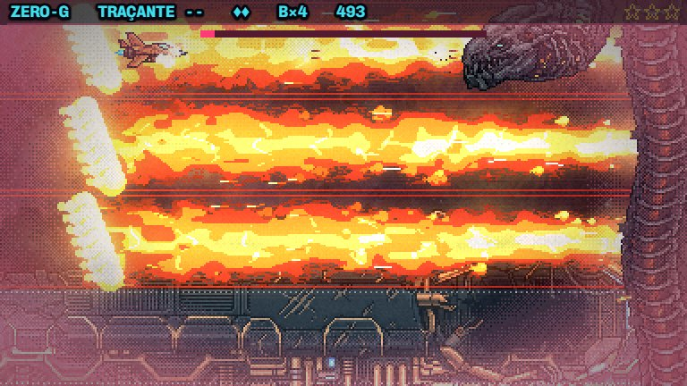
O Guardião e a Besta (F4, a luta final). A opção A (o core da Besta) ficou justa: com qualquer mão, ela dura de 40 a 70 s, presa às travas das assinaturas.
Os nomes das causas: lavaGuardiao = os pulsos de lava; serraGiroSheet = a serra; gotaSangue = o teto que sangra; spark = as cabeças das serpentes; lava = a lava da Besta; corpo = encostar no corpo. Na F4, o acerto foi contado pelo método antigo e pode sair alguns pontos acima do real.
| Mão | Canhão | Piloto experiente (550 ms) | Piloto comum (700 ms) | ||||||
|---|---|---|---|---|---|---|---|---|---|
| a luta | a luta | golpes | vidas | mortes | a luta | golpes | vidas | mortes | |
| sem cartas (3/3/3) | 271 s | 303 s | 24,3 | 24,3 | 7,7 | 295 s | 31,7 | 31,7 | 10,0 |
| mediana (3/3/3) | 148 s | 156 s | 12,0 | 2,3 | 0,7 | 157 s | 14,0 | 4,3 | 1,0 |
| forte (3/3/3) | 71 s | 93 s | 6,0 | 1,3 | 0,0 | 93 s | 8,7 | 2,3 | 0,3 |
Médias das lutas; entre parênteses, quantas lutas de cada robô. "Golpes" conta o que o casco das cartas segurou; "vidas", só o que tirou vida.
| Fase | Canhão | Experiente | vidas | Comum | vidas | Ameaças na tela (média) | Maior respiro | Onde o experiente apanha |
|---|---|---|---|---|---|---|---|---|
| guardiao1 | 69 s | 70 s | 5,0 | 70 s | 6,0 | 2,0 | 5,3 s | volta 2,0 · segura 1,7 · serra 1,3 |
| guardiao2 | 64 s | 71 s | 4,0 | 68 s | 7,7 | 3,1 | 5,2 s | segura 3,0 · serra 1,0 |
| guardiao3 | 64 s | 65 s | 3,0 | 68 s | 7,3 | 3,3 | 5,3 s | teto 1,3 · segura 1,0 · serra 0,7 |
| besta1 | 19 s | 28 s | 4,0 | 24 s | 3,3 | 0,8 | 11,3 s | agacha 1,3 · chao 1,0 · sede 1,0 · slash 0,7 |
| besta2 | 24 s | 27 s | 4,0 | 28 s | 3,3 | 10,5 | 8,7 s | recupera 1,7 · agacha 0,7 · salto 0,7 · chao 0,7 · bote 0,3 |
| besta3 | 30 s | 40 s | 4,3 | 36 s | 4,0 | 3,2 | 23,8 s | olhos 1,7 · slash 0,7 · salto 0,7 · coracao 0,7 · agacha 0,3 · recupera 0,3 |
| Fase | Canhão | Experiente | vidas | Comum | vidas | Ameaças na tela (média) | Maior respiro | Onde o experiente apanha |
|---|---|---|---|---|---|---|---|---|
| guardiao1 | 25 s | 26 s | 0,0 | 27 s | 0,0 | 1,8 | 5,2 s | volta 1,0 · serra 1,0 |
| guardiao2 | 26 s | 31 s | 0,3 | 32 s | 1,0 | 3,4 | 4,8 s | volta 1,0 · serra 0,7 |
| guardiao3 | 33 s | 32 s | 0,0 | 32 s | 1,3 | 3,2 | 5,2 s | teto 0,3 · volta 0,3 · serra 0,3 |
| besta1 | 17 s | 18 s | 1,0 | 18 s | 1,0 | 1,0 | 11,7 s | chao 1,0 · slash 1,0 |
| besta2 | 24 s | 25 s | 1,0 | 24 s | 1,0 | 10,7 | 12,2 s | slash 1,0 · recupera 1,0 · agacha 0,7 · sede 0,3 · salto 0,3 |
| besta3 | 22 s | 23 s | 0,0 | 23 s | 0,0 | 4,9 | 17,4 s | olhos 1,0 · coracao 1,0 |
| Fase | Canhão | Experiente | vidas | Comum | vidas | Ameaças na tela (média) | Maior respiro | Onde o experiente apanha |
|---|---|---|---|---|---|---|---|---|
| guardiao1 | 6 s | 7 s | 0,0 | 7 s | 0,0 | 1,1 | 2,4 s | |
| guardiao2 | 10 s | 15 s | 0,0 | 14 s | 0,0 | 3,4 | 3,1 s | serra 0,3 · segura 0,3 |
| guardiao3 | 16 s | 17 s | 0,0 | 17 s | 1,0 | 2,8 | 4,4 s | |
| besta1 | 10 s | 17 s | 1,0 | 17 s | 1,3 | 1,3 | 8,1 s | slash 1,0 · chao 0,7 · recupera 0,3 |
| besta2 | 16 s | 21 s | 0,3 | 18 s | 0,0 | 14,5 | 8,2 s | recupera 1,0 · agacha 0,3 · slash 0,3 · sede 0,3 |
| besta3 | 10 s | 14 s | 0,0 | 19 s | 0,0 | 9,7 | 7,4 s | coracao 1,0 · olhos 0,3 |
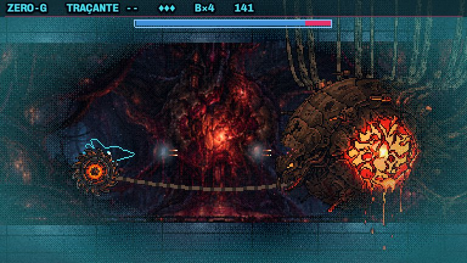
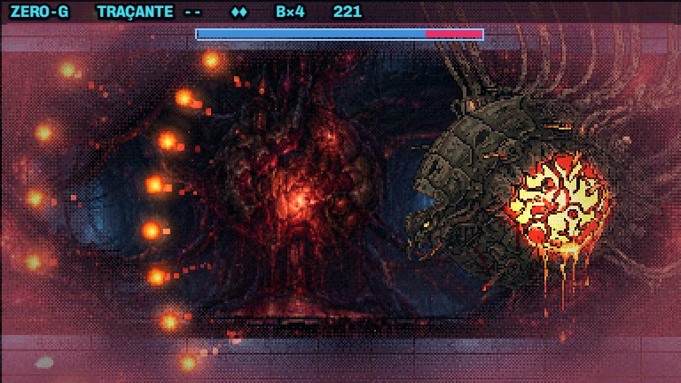
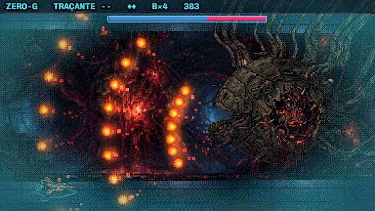
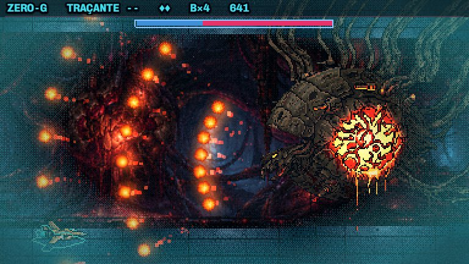
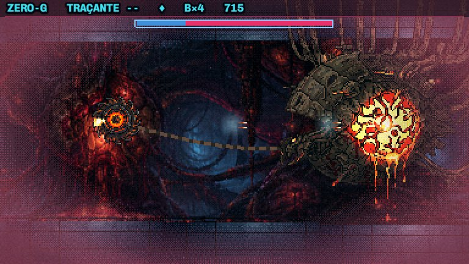
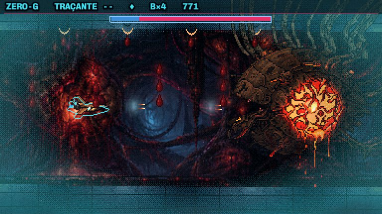
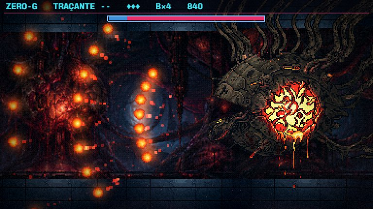
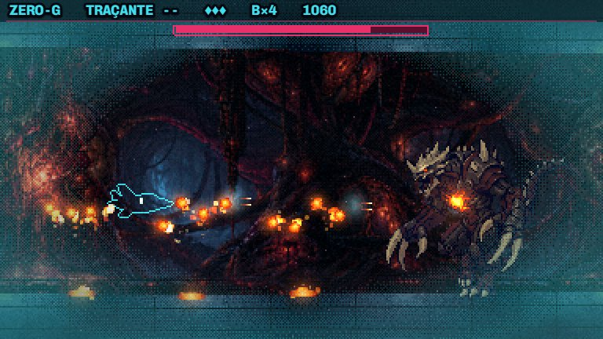
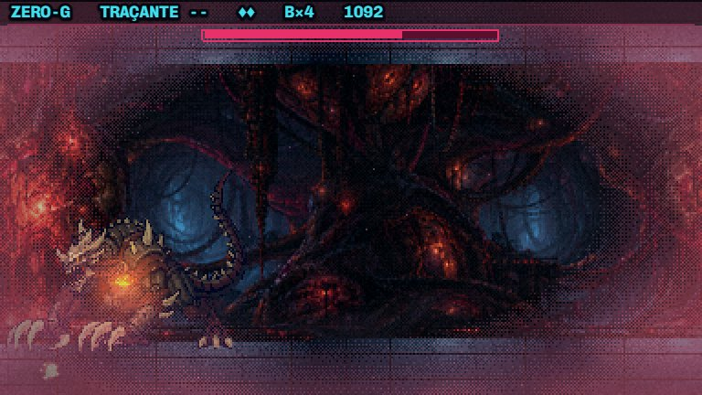
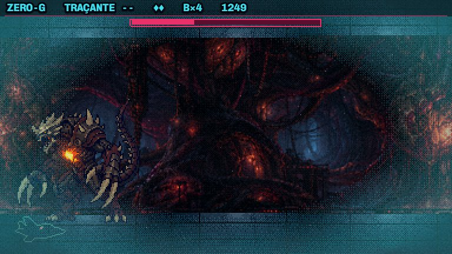
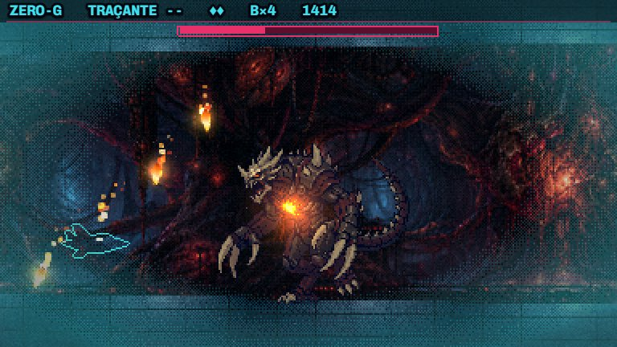
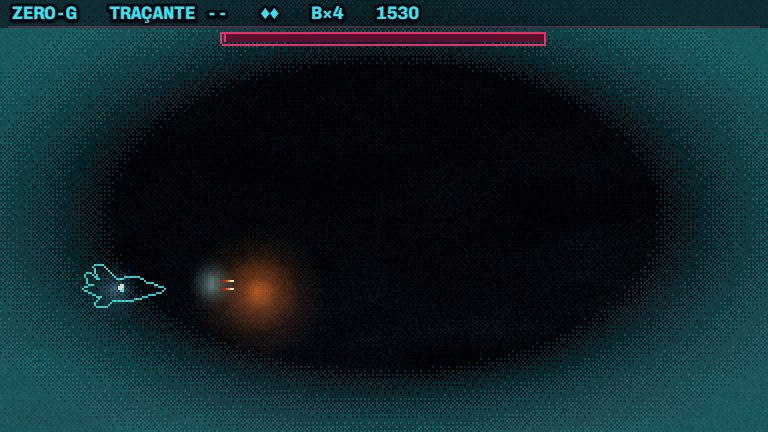
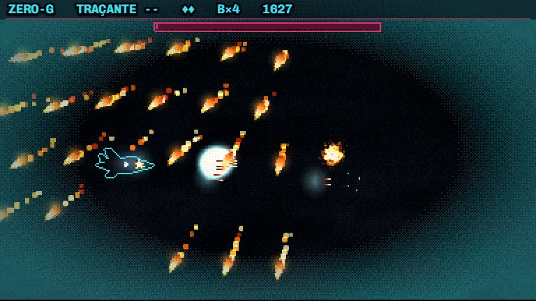
Os robôs ficam em scripts/_rebalance/robo/: canhao.mjs, piloto.mjs (--reacao, --fotos), juntar.mjs e folha.mjs. O registro é o ?registro (src/dev/registro/). Rode numa cópia do jogo em outra porta, um robô por vez: cada um ocupa de 2 a 2,6 GB de memória.